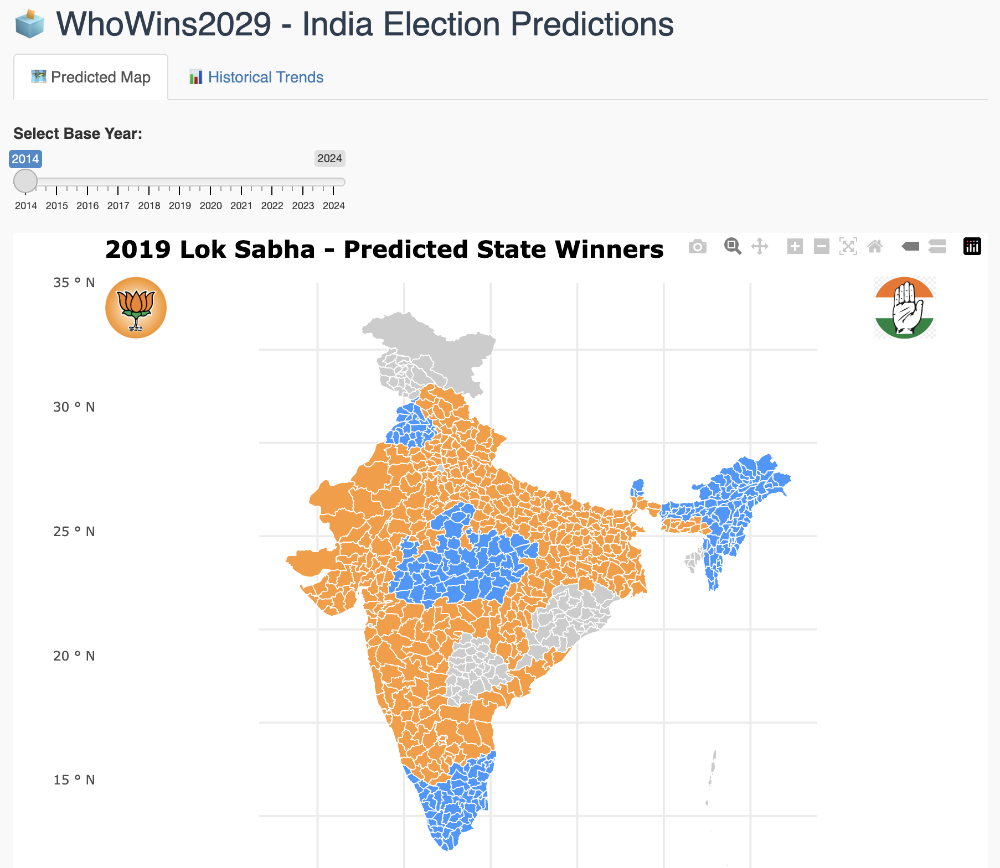
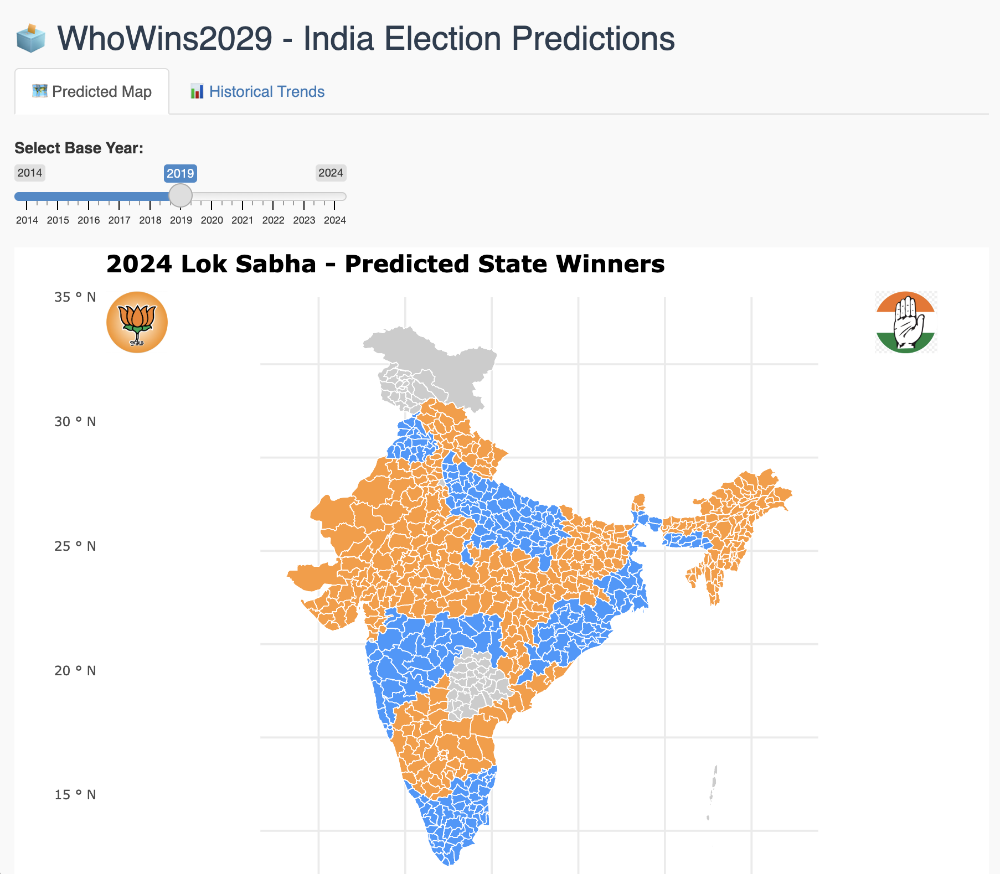
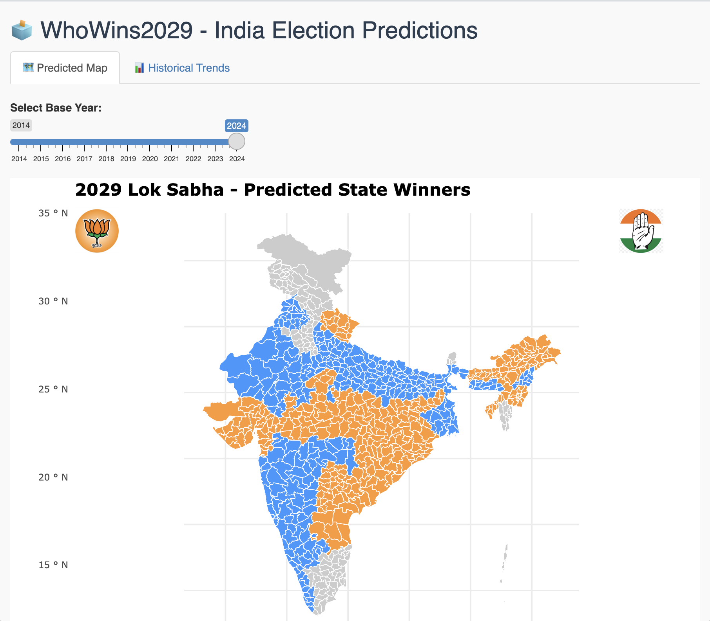

Who wins the 2029 Lok Sabha election?
A random-forest model, trained on constituency-level results and demographic features, projects the next general election three separate ways — once from each of the last three mandates. This bulletin lays out what it found, and reads it against the state elections and economic data of 2026.
How the forecast is actually built
There's one important detail worth being precise about: the app doesn't train three separate models. There's a single pre-fitted random forest classifier (model_rf_party.rds) that predicts a constituency's winning party from a fixed set of features. What changes when you move the base-year slider is which year's rows get fed into that same model, and how they're nudged first.
Concretely, each row in election_data_features_filtered.csv describes one constituency in one election year: its state, candidate, party, vote share, vote margin, a swing-votes measure, a turnout-impact measure, and whether the seat had an incumbent.
What happens when you pick a base year
- Filter to every constituency row for the selected base year (2014, 2019, or 2024).
- Perturb two features — small random noise is added to
swing_votesandturnout_impact, standing in for the shift that normally happens between one election and the next. The randomness is seeded to the chosen year, so the same base year always produces the same nudge rather than a new one every time you move the slider. - Reset incumbency —
incumbentis forced to 0 for every seat. In effect, the model is asked to predict each constituency as if it were open, with no sitting-MP advantage carried forward. - Classify — each nudged row is run through the same trained random forest to get a predicted party.
- Roll up to constituency — within each constituency, whichever predicted party has the higher average vote share is taken as that constituency's projected winner.
- Roll up to state — whichever party wins more constituencies inside a state is the color shown for that state on the map.
- Label forward — the result is titled
base year + 5, so feeding in 2024 produces a map titled "2029 Lok Sabha."
→ labeled 2019
2014's feature rows, nudged and re-classified, compared against the real 2019 result as a sanity check on the approach.
→ labeled 2024
2019's feature rows, nudged and re-classified, compared against the real 2024 result — a second sanity check.
→ labeled 2029
The only one of the three with no real result to check against yet — this is the actual forward-looking output.
Data and tooling: constituency-level feature table (election_data_features_filtered.csv), state boundaries (india_states.geojson), and the serialized random forest (model_rf_party.rds), rendered through a Shiny app (ggplot2 + plotly for the interactive choropleth, party logos overlaid via base64enc).
Three forecasts, one target
Slide between the three baselines below. The first two are back-tests against elections that already happened; the third — 2024 → 2029 — is the model's actual forward projection.

Sanity check: 2014's feature rows, nudged forward and re-classified by the same model, reconstructing the already-known 2019 map.
whowins2029.vercel.app
Sanity check: 2019's feature rows, nudged forward and re-classified by the same model, reconstructing the already-known 2024 map.
whowins2029.vercel.app
The forecast: 2024's feature rows, nudged forward and re-classified by the same model, projecting a still-undecided 2029 map.
whowins2029.vercel.appWorth being precise about the mechanism: "projecting forward" here means taking a past year's constituency features, adding a small random nudge to two of them, wiping incumbency status to zero, and re-running the same classifier — not incorporating any genuinely new information about 2029 (new candidates, new alliances, or the 2026 state elections above, which postdate this dataset). Treat the 2029 panel as one structured hypothesis under that specific set of assumptions, not a prediction of record.
Voter turnout by year
Turnout is one of the features the model conditions on. Below is the year-wise average drawn from the project's feature table.
The current political landscape
Two state elections in 2026 are the most recent real signals available, well after the model's 2024 training cutoff. Neither settles who wins a national election in 2029 — state and general elections in India have historically diverged — but both are part of the picture.
BJP ends 15 years of TMC rule
The BJP won a landslide victory in the 2026 West Bengal assembly election, defeating the incumbent All India Trinamool Congress led by Mamata Banerjee and becoming the first right-wing party to govern the state. Turnout was a historic near-94%, the highest ever recorded for a general or state legislative election in India.
Source: Wikipedia, 2026 West Bengal Legislative Assembly election
Congress-led UDF ends a decade of LDF rule
The Congress-led United Democratic Front swept the 2026 Kerala assembly election, ending ten years of Left Democratic Front government under Pinarayi Vijayan. It was the alliance's strongest mandate since 1977, and left Kerala as the only major state where a communist-led front had governed — a run that has now ended.
Source: Wikipedia, 2026 Kerala Legislative Assembly election
The economic backdrop
India entered the second half of the decade as the fastest-growing major economy in the world, though still comparatively poor on a per-person basis — a combination that shapes campaign messaging on both sides of the aisle.
Sources: Worldometer / IMF WEO, Wikipedia, Economy of India
Reading these together: a state sweep for one national party and a state sweep for the other, in the same election season, is itself a data point worth sitting with — it argues against assuming either result travels cleanly to a 543-seat national contest three years out.
Does the BJP's vote share grow, or hit a ceiling?
Set aside the model for a moment — this is the question analysts, pollsters, and the party's own strategists are actually arguing about ahead of 2029. The historical trend line and the 2026 state results can be read two ways, and the honest answer is that both readings have real evidence behind them.
Expansion into new territory
The BJP has spent this decade building a presence in states where it was historically weak, and the 2026 Bengal result — after a MOTN tracking survey had already shown the party consolidating there — reads as that strategy paying off.
Historically the party has also been efficient at turning regional vote-share gains into seats: it went from 282 seats on 31.3% of the vote in 2014 to 303 seats on 37.4% in 2019, a pattern first-past-the-post rewards when a party sweeps its strongest states.
Analysts also point to the scale of direct-benefit welfare programs — free food grain, LPG and housing subsidies reaching hundreds of millions of households — as a stabilizing floor under the party's national vote share, independent of any single election cycle's news.
Sources: India Today–CVoter Mood of the Nation, Jan 2026, ThePrint, opinion, Hindustan Times, seat/vote-share chart, Open Magazine, opinion
A ceiling, not a floor
2024 is the counter-example: BJP's own vote share actually slipped to about 36.5% and its seat count fell from 303 to 240 once the opposition INDIA bloc largely avoided splitting the anti-BJP vote. By most tallies the NDA's national lead over INDIA was only a few points — enough to matter, not enough for a landslide.
CPI(M)'s own post-election review of 2024 ties BJP losses in specific belts to rural distress, youth unemployment and inflation — pressures that don't disappear on their own and that opposition strategists are explicitly trying to keep alive into 2029.
The core arithmetic risk for the BJP: if a unified opposition holds even a 2–3 point swing against the party in Uttar Pradesh or Bihar, the largest vote-rich states, that alone can cancel out gains made elsewhere.
Sources: Wikipedia, 2024 results, IndiaVotes.com, CPI(M) central committee review, ThePrint, opinion
Neither case is a prediction — they're the two ends of the range serious analysts are actually debating. A genuinely useful forecast holds both in mind at once, which is part of why this bulletin runs three separate baselines rather than presenting one number.
What do you think happens in 2029?
0 entriesLeave your own read on the forecast — under your name, a handle, or anonymously. Be specific about what you'd weigh differently.